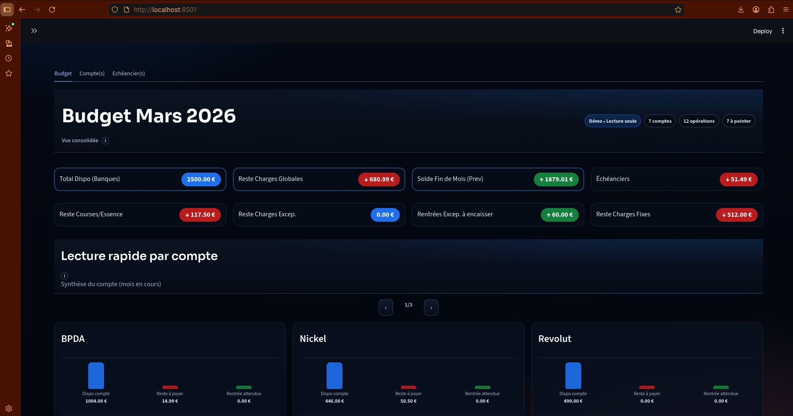
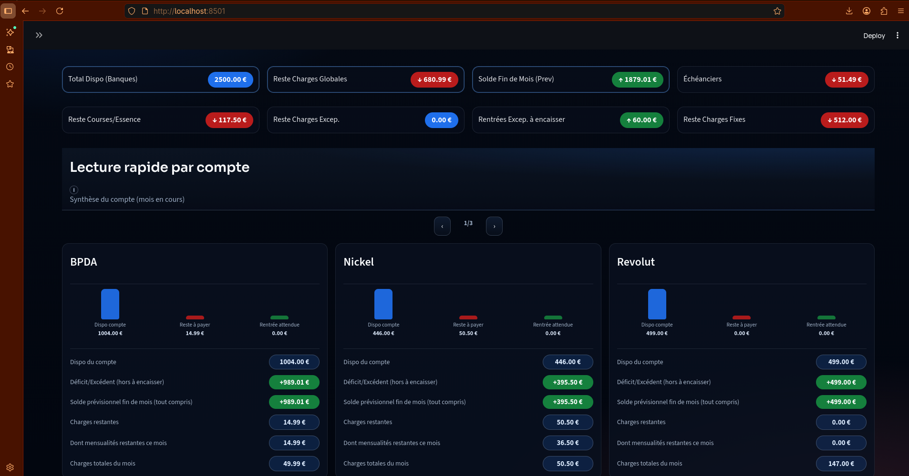
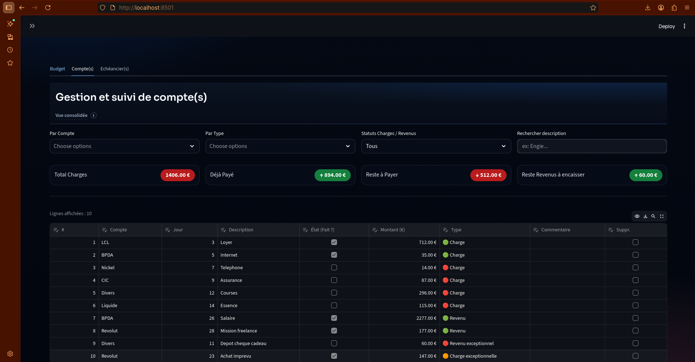
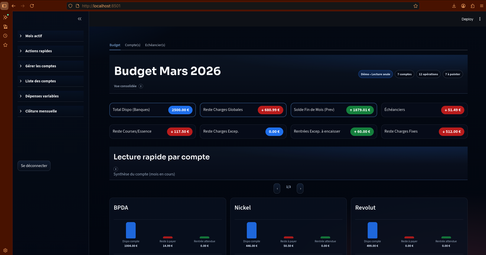

📊 Budget Manager (V1)
🎯 Objective
Design and deliver a local-first budgeting application focused on structured state management, persistence, and Linux-native deployment.
This project served as:
- A validation of AI-assisted development workflows
- A practical experimentation ground for UI-state architecture
- A packaging & distribution exercise
🖼 Screenshots
Screenshots







🏗 Architecture Overview
Frontend Layer:
- Streamlit interface
- Structured session state management
- Defensive initialization patterns
Persistence Layer:
- JSON-based local storage
- Monthly data segmentation
- Version-ready structure
Execution Environment:
- Python virtual environment isolation
- Streamlit runtime
- Linux local deployment
🧠 Technical Challenges
- Managing
st.session_statestability - Preventing null-state crashes
- Structuring persistent JSON storage
- Preparing for future database migration
🛠 Deployment Strategy
Designed for:
- Local execution
- Virtual environment isolation
- Linux distribution readiness
- Potential packaging into AppImage
User flow:
- Activate virtual environment
- Launch Streamlit server
- Local browser execution
- Structured data persistence
🤖 AI-Assisted Development
Development approach included:
- Iterative code generation
- Structured validation loops
- Refactoring cycles
- Error simulation & correction
- Progressive architecture cleanup
AI used as:
- Accelerator
- Reviewer
- Refactoring assistant
- Edge-case simulator
📈 What This Demonstrates
- Practical product delivery
- Local-first design mindset
- Deployment awareness
- Structured debugging methodology
- Controlled AI orchestration
🎬 Demo Video
Short looping video
If the video does not play in-browser: open video file
🔐 Source Code
Public showcase repository available. Full structured version available upon professional request.